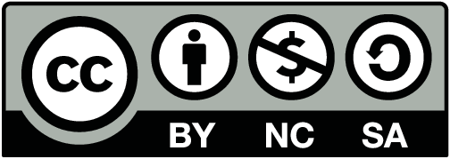

A brief outline of the history of this text, and the authors involved. Also includes license information for those that may be interested in using it.

This work is dual licensed under the Creative Commons Attribution-Noncommercial-Share Alike 4.0 International License and the Creative Commons Attribution-Share Alike 4.0 International License. To view a copy of these licenses, visit https://creativecommons.org/licenses/by-nc-sa/4.0/ or https://creativecommons.org/licenses/by-sa/4.0/ or send a letter to Creative Commons PO Box 1866, Mountain View, CA 94042, USA.
You can use, print, duplicate, share this book as much as you want. You can base your own notes on it and reuse parts if you keep the license the same. You can assume the license is either the CC-BY-NC-SA or CC-BY-SA, whichever is compatible with what you wish to do, your derivative works must use at least one of the licenses. Derivative works must be prominently marked as such.
The date is the main identifier of version. The major version / edition number is raised only if there have been substantial changes.
See https://sites.rutgers.edu/matthew.charnley for more information (including contact information).
The main inspiration for this book, as well as the vast majority of the source material, is Notes on Diffy Qs by Jiří Lebl . The fact that the book is freely available and open-source provided the main motivation for creating this current text. It allowed this book to be put together in a timely manner to be useful. It significantly reduced the work needed to put together a free textbook that fit the course exactly.
This text was originally designed for the Math 244 class at Rutgers University. This class is a first course in Differential Equations for Engineering majors. This class is taken immediately after Multivariable Calculus and does not assume any knowledge of linear algebra. Prior to the design of this book, the course used Boyce and DiPrima’s Elementary Differential Equations and Boundary Value Problems . The course provided a very brief introduction to matrices in order to get to the information necessary to handle first order systems of differential equations. With the course being redesigned to include more linear algebra, I was pointed in the direction of Jiří Lebl’s Notes on Diffy Qs , which was meant to be a drop-in replacement for the Boyce and DiPrima text, and as of a more recent version of the text, contained an appendix on Linear Algebra.
In creating this book, I wanted to retain the style of Notes on Diffy Qs but shape the text into something that directly fit the course that we wanted to run. This included reorganizing some of the topics, extra contextualization of the concept of differential equations, sections devoted to modeling principles and how these equations can be derived, and guidance in using MATLAB to solve differential equations numerically. Specifically, the content added to this book is
I would like to acknowledge David Molnar, who initially referred me to the Notes on Diffy Qs text , as well as the Precalculus text , and provided inspiration and motivation to work on designing this text. For feedback during the development of the text, I want to acknowledge David Herrera, Yi-Zhi Huang, and many others who have helped over the development and refinement of this text. Finally, I want to acknowledge the Rutgers Open and Affordable Textbook Program for supporting the development and implementation of this text.
This book originated from my class notes for Math 286 at the University of Illinois at Urbana-Champaign (UIUC) in Fall 2008 and Spring 2009. It is a first course on differential equations for engineers. Using this book, I also taught Math 285 at UIUC, Math 20D at University of California, San Diego (UCSD), and Math 4233 at Oklahoma State University (OSU). Normally these courses are taught with Edwards and Penney, Differential Equations and Boundary Value Problems: Computing and Modeling , or Boyce and DiPrima’s Elementary Differential Equations and Boundary Value Problems , and this book aims to be more or less a drop-in replacement. Other books I used as sources of information and inspiration are E.L. Ince’s classic (and inexpensive) Ordinary Differential Equations , Stanley Farlow’s Differential Equations and Their Applications , now available from Dover, Berg and McGregor’s Elementary Partial Differential Equations , and William Trench’s free book Elementary Differential Equations with Boundary Value Problems . See the furtherreading:chapter chapter at the end of the book.
The book’s website https://www.jirka.org/diffyqs/ contains the following resources:
I taught the UIUC courses using IODE (https://faculty.math.illinois.edu/iode/). IODE is a free software package that works with Matlab (proprietary) or Octave (free software). The graphs in the book were made with the Genius software (see https://www.jirka.org/genius.html). I use Genius in class to show these (and other) graphs.
Firstly, I would like to acknowledge Rick Laugesen. I used his handwritten class notes the first time I taught Math 286. My organization of this book through chapter 5, and the choice of material covered, is heavily influenced by his notes. Many examples and computations are taken from his notes. I am also heavily indebted to Rick for all the advice he has given me, not just on teaching Math 286. For spotting errors and other suggestions, I would also like to acknowledge (in no particular order): John P. D’Angelo, Sean Raleigh, Jessica Robinson, Michael Angelini, Leonardo Gomes, Jeff Winegar, Ian Simon, Thomas Wicklund, Eliot Brenner, Sean Robinson, Jannett Susberry, Dana Al-Quadi, Cesar Alvarez, Cem Bagdatlioglu, Nathan Wong, Alison Shive, Shawn White, Wing Yip Ho, Joanne Shin, Gladys Cruz, Jonathan Gomez, Janelle Louie, Navid Froutan, Grace Victorine, Paul Pearson, Jared Teague, Ziad Adwan, Martin Weilandt, Sönmez Sahutoglu,Pete Peterson, Thomas Gresham, Prentiss Hyde, Jai Welch, Simon Tse, Andrew Browning, James Choi, Dusty Grundmeier, John Marriott, Jim Kruidenier, Barry Conrad, Wesley Snider, Colton Koop, Sarah Morse, Erik Boczko, Asif Shakeel, Chris Peterson, Nicholas Hu, Paul Seeburger, Jonathan McCormick, David Leep, William Meisel, Shishir Agrawal, Tom Wan, Andres Valloud, and probably others I have forgotten. Finally, I would like to acknowledge NSF grants DMS-0900885 and DMS-1362337.